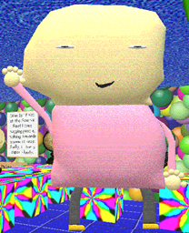

"Mary" is the Principal of the Thing replacement in "Freddo's Awsome Math Game!"(/"FAMG").
Aliases
Mary, Unnamed Principal of the Thing replacement.
Appearance
Mary appears as a poorly modeled human. They wear a pink shirt, gray pants, and yellow shoes. They are bald. They have a sleepy looking expression. Their eyes are very thin. They have a huge head and tiny legs as well.
Gallery

Trivia
Mary has the power to float for an unknown reason.
Mary uses They/She/He.
No one really knows who Mary is or where they came from.